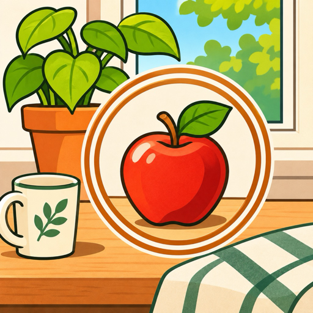
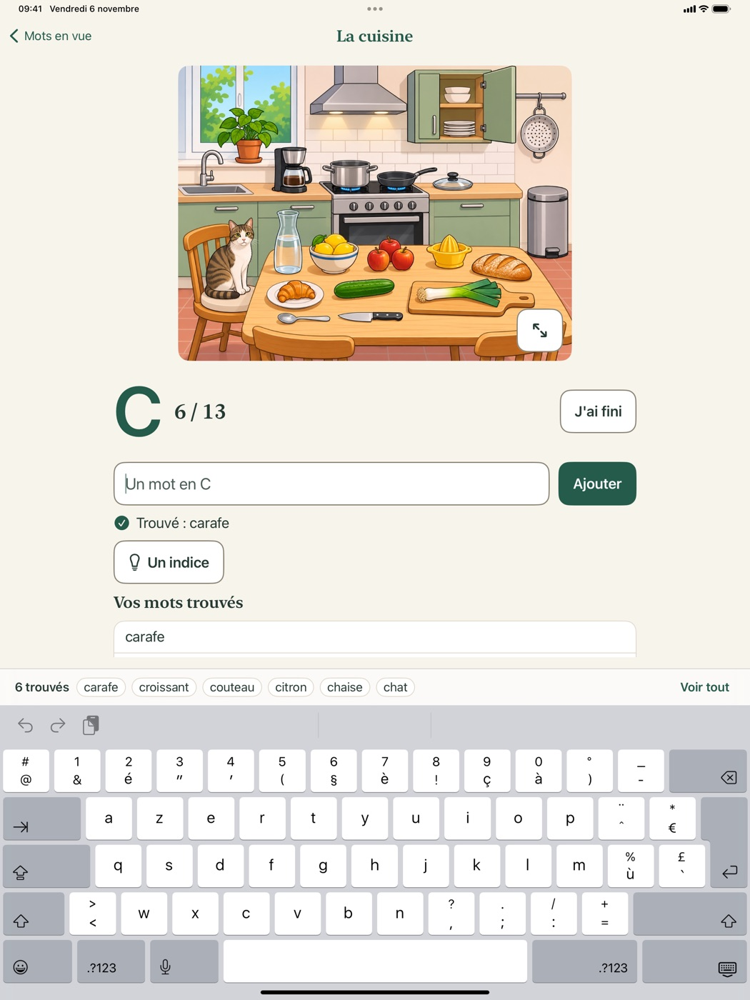
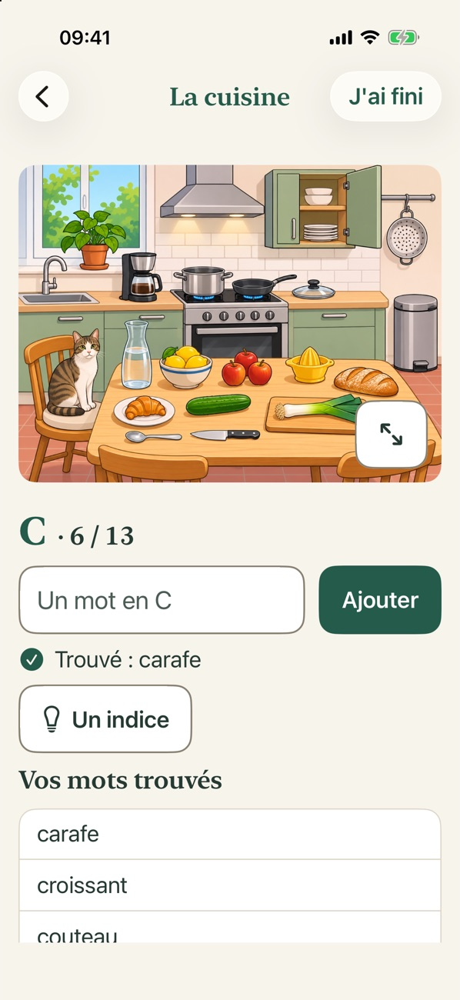
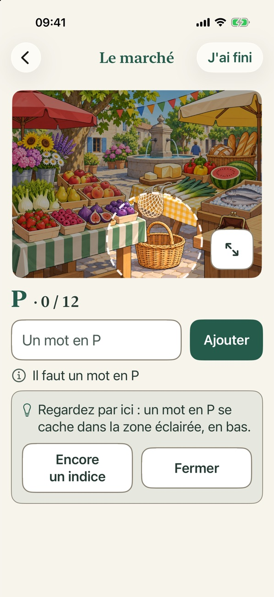
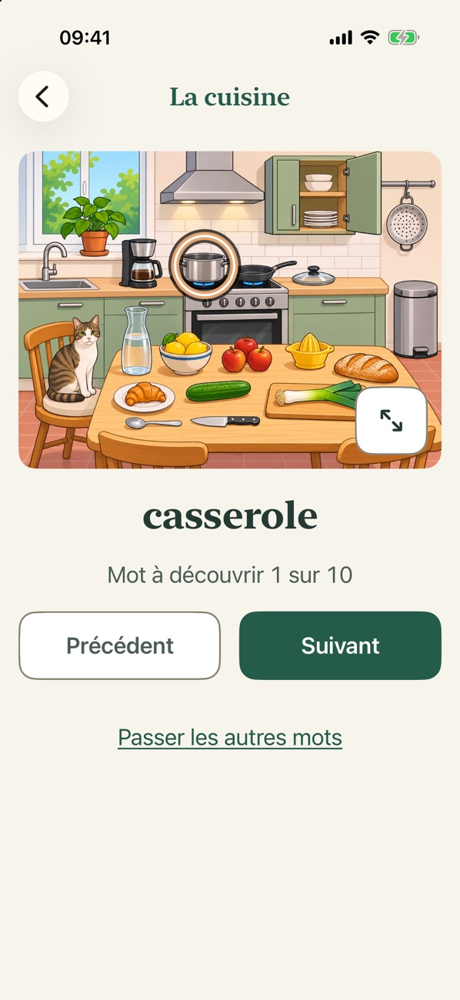
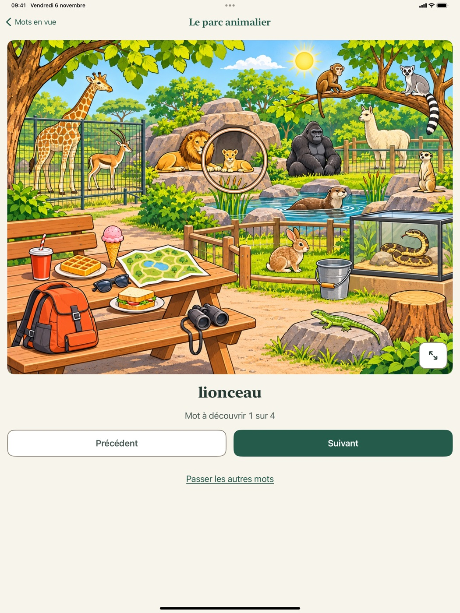
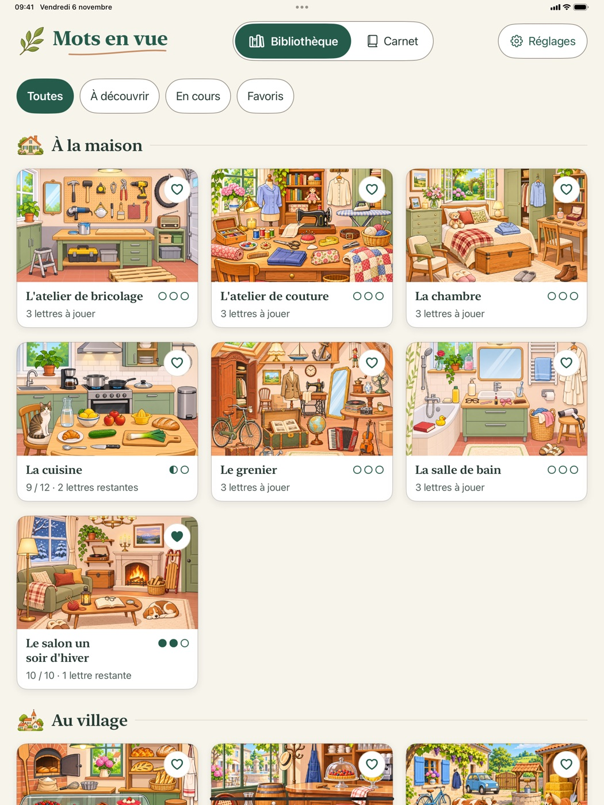
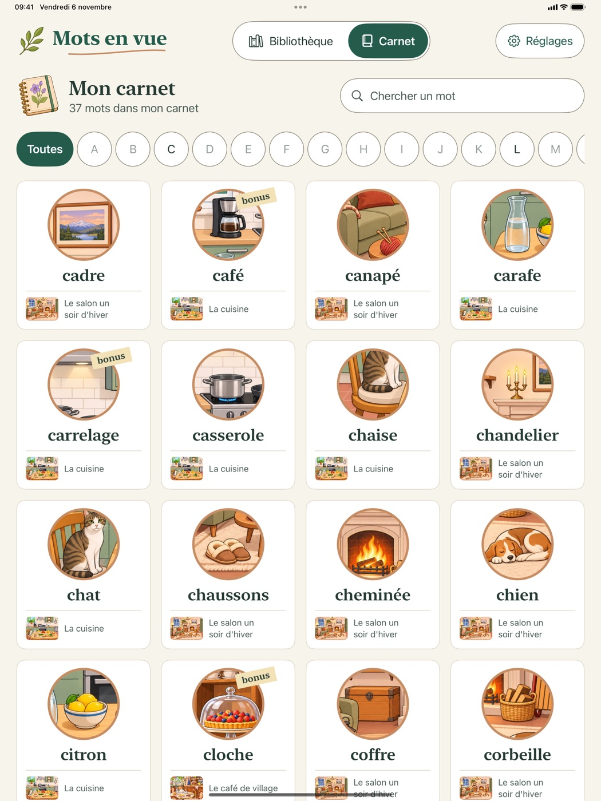

Mots en vueUne scène illustrée, une lettre : trouvez tous les mots qui commencent par cette lettre et que vous voyez dans l'image. À votre rythme, sans chrono.
Voir comment on joueBientôt sur l'App Store, pour iPad et iPhone.

Il n'y a rien à apprendre : la première manche s'explique en une phrase.
Une cuisine, un marché, un grenier… Chaque scène fourmille de détails. Agrandissez l'image pour tout voir.

Écrivez les mots qui commencent par la lettre. Pluriels, articles et petites fautes sont reconnus. Besoin d'un coup de pouce ? L'indice éclaire une zone de l'image.

Quand vous avez fini, le jeu montre un à un les mots que vous n'aviez pas vus, chaque objet entouré sur l'illustration.

Les mots sont choisis et vérifiés à la main, scène par scène. Si le vôtre n'est pas dans la liste, le jeu vous le dit simplement, et vous continuez.

La Bibliothèque range les scènes en albums : à la maison, au village, en vacances. Le Carnet garde chaque mot découvert et la scène où vous l'avez vu.

Le jeu suit la taille de texte de votre iPad ou de votre iPhone, jusqu'aux plus grandes. Contrastes soignés, grands boutons, aucune animation indispensable.
Il se joue seul ou à plusieurs autour du même iPad : il suffit de chercher ensemble, à voix haute.

Une question, un mot refusé, une idée ? Dans le jeu : Réglages › Donner mon avis. Ou par e-mail : wordsahoy@icloud.com. Pour un mot refusé, dites-nous lequel et dans quelle scène.
Non, le jeu fonctionne entièrement hors ligne.
Non. Aucun compte, aucune inscription, aucune publicité.
Oui : la manche en cours vous attend sur l'accueil (« Manche à reprendre »).
Le jeu suit la taille de texte de l'appareil : Réglages › Accessibilité › Affichage et taille du texte › Police plus grande.
iPad et iPhone, avec iPadOS ou iOS 17 ou plus récent.
L'app ne collecte rien. Voir la politique de confidentialité.
Mots en vue est un jeu de mots illustré, gratuit, pour iPad et iPhone : une scène, une lettre, et l'on cherche tous les mots qui commencent par cette lettre dans l'illustration. Sans chrono, sans pénalité, sans publicité ; on joue à son rythme, seul ou à plusieurs, et l'on découvre à la fin les mots qu'on n'avait pas vus. Créé par Thibaud Piquet, développeur indépendant.
Vous préparez un article ou un atelier ? Écrivez-nous : wordsahoy@icloud.com.
Words Ahoy! shows an illustrated scene and a letter: type every word starting with that letter that you can see in the picture. French only for now. Questions or feedback: wordsahoy@icloud.com.